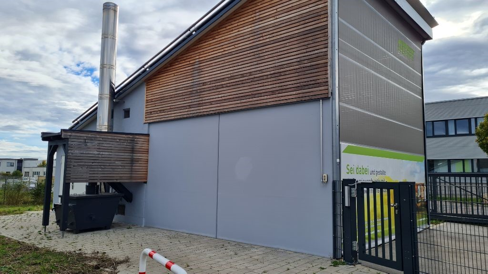

Unser Projekt: Nahwärmenetz Kemnitz
Das Projekt Nahwärmenetz Kemnitz verfolgt das Ziel, eine nachhaltige, regionale und umweltfreundliche Wärmeversorgung für unsere Gemeinde aufzubauen. Mit Hilfe moderner Technik und erneuerbarer Energien möchten wir gemeinsam eine bezahlbare Alternative zur Öl- und Gasheizung schaffen.
Ziele
- Reduktion von CO₂-Emissionen
- Versorgungssicherheit durch regionale Energiequellen
- Langfristige Kostensicherheit für Haushalte
Nächste Schritte
- Bedarfserhebung und Interessenbekundung
- Planung der technischen Umsetzung
- Informationsveranstaltungen für Bürgerinnen und Bürger